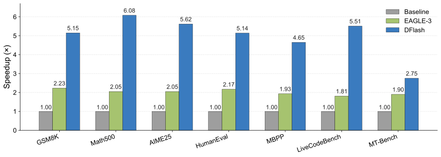
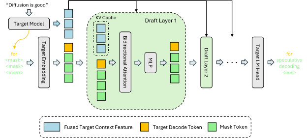

这篇文章补上投机推理系列里缺的一块：演变篇 已经把 DFlash 放在 Medusa / MTP 之后、DSpark 之前的位置；EAGLE 篇 讲的是自回归草稿支线；DSpark 篇 讲的是在 DFlash backbone 上加半自回归头与置信度调度。本文只盯住 DFlash 本身： 为什么 block diffusion 可以做 drafter、为什么 target feature 必须深度注入、为什么训练要随机采 anchor、以及 verify 阶段到底在验什么。
AR drafter 准但串行；普通 diffusion 并行但质量弱。
target hidden features 融合后作为 KV 注入每层 draft model。
随机 anchor + masked block，严格对齐推理时的 block draft。
target verify 是 prefill-like forward，不是一次自由生成多 token。
一、DFlash 要解决的不是「验证」，而是「起草太串行」
投机解码的基本公式是：
其中 \(T_{\text{draft}}\) 是草稿耗时，\(T_{\text{verify}}\) 是目标模型验证耗时，\(\tau\) 是每轮平均接受 token 数。 EAGLE 系列主要在提高 \(\tau\) 上做文章，但它的 drafter 仍然是链式自回归：要起草 \(\gamma\) 个 token，至少要跑 多步轻量 forward 或展开一棵树。DFlash 反过来问：如果草稿阶段本身可以一次前向预测整块 token， \(T_{\text{draft}}\) 能不能几乎不随 \(\gamma\) 增长？
| 草稿器类型 | 生成方式 | 草稿耗时 | 主要风险 |
|---|---|---|---|
| 自回归 drafter | 逐 token 或逐层展开 | 近似 \(T_{\text{draft}}=\gamma\cdot t_{\text{step}}\) | 越长越慢，只能用很浅的 draft head |
| 并行 / diffusion drafter | 一次前向填充一整个 masked block | 近似 \(T_{\text{draft}}=t_{\text{parallel}}\) | block 内 token 依赖弱，后段容易 suffix decay |
DFlash 的答案是使用轻量 block diffusion model 做 drafter。这里的 diffusion 不是为了最终独立生成高质量文本， 而是只承担「给 target model 提 proposal」的角色。即使草稿并不完美，只要 target verify 严格执行，最终输出仍由目标模型决定； 草稿质量只影响接受长度和速度。这正是 speculative decoding 对 diffusion drafter 友好的地方。

二、推理结构：target knows best
直接训练一个小 diffusion model 从 token context 猜未来 block，效果并不好。论文附录里专门做了「without target feature」对照， 速度提升通常只有 2× 到 3× 左右。原因不难理解：小模型既要理解长上下文，又要并行猜多步未来，相当于从零复刻 target model 的推理能力，容量明显不够。
DFlash 的核心洞察是：目标模型的 hidden states 已经包含了大量未来 token 信息。给定上下文，target model 做一次标准 prefill / decode 时，从若干层抽取隐藏状态 \(H^{(l_1)},\ldots,H^{(l_m)}\)，拼接后通过轻量投影压回草稿维度：
这个 \(H_{\text{ctx}}\) 不是只在输入层和 token embedding 拼一次，而是被投影成每一层 draft transformer 的 Key / Value， 放进 draft KV cache。于是 draft model 的每一层、每个 masked position 都能持续 attend 到来自 target 的深层上下文。

2.1 为什么是 KV injection，不是 input fusion
EAGLE-3 一类方法把 target feature 和 token embedding 融合后作为 drafter 输入。这在浅层 drafter 中很自然， 但 draft model 变深后，target feature 的信息会在层间变换中被稀释。DFlash 选择 KV injection，相当于在每层都给 drafter 一条稳定的 target-context 旁路。
论文的 ablation 结论也支持这一点：无论在 autoregressive drafting 还是 block-diffusion drafting 下，KV injection 都比 input fusion 得到更高接受长度。更重要的是，DFlash 能因为并行起草而使用 3 层、5 层甚至 8 层 draft model， 这时「每层都能看见 target feature」比「只在入口融合一次」更关键。
2.2 Block diffusion 在这里到底 diffusion 了什么
DFlash 的 block diffusion 可以理解为「给定 anchor token 和 target context，一次预测后续 masked block」。推理时，输入通常是 一个干净 anchor token 加上一组 mask token，草稿模型在这些 mask 位置并行输出 logits，采样或取 argmax 后得到候选块 \(d_1,\ldots,d_\gamma\)。和完整 dLLM 不同，DFlash 不追求多轮 denoising 到最终文本质量，而是把 denoising 步数压到极少， 用 target verify 接管质量保证。
三、训练：随机 anchor，让训练形状对齐推理形状
DFlash 训练时冻结目标模型、冻结共享 embedding 与 LM head，只训练 draft transformer 层以及特征投影。训练数据不是直接使用原始回复， 而是用 target model 生成 responses，以提升 draft 分布和目标模型的对齐程度。论文主实验使用约 800K 样本，来自 NVIDIA Nemotron Post-Training Dataset V2 与 CodeAlpaca 的混合，并用目标模型生成回复。
标准 block diffusion 训练会把 response 均匀切块，再随机 mask 块内位置。DFlash 修改为更贴近 speculative decoding 的形态：
在 response 中随机采样若干 anchor token，把每个 anchor 作为 block 第一个干净位置，其后位置置为 mask，训练模型预测
block_size - 1 个未来 token。这样做有两个好处：
- 对齐推理。推理时 anchor 通常来自上一轮 target verify 产生或确认的 token，训练也从干净 anchor 出发。
- 控制长上下文成本。每条长序列只采固定数量 anchor block，训练成本不随完整 context 长度线性爆炸。
- 增加覆盖。每个 epoch 可重新随机采 anchor，让同一条 response 暴露出更多局部预测窗口。
注意力 mask 也不是普通下三角。一个 batch 内会拼接多个 masked blocks：同一 block 内 token 可以双向注意， block 可以看对应 target context features，但不同 block 之间不能泄漏信息。论文使用 Flex Attention 高效实现这种稀疏模式。
损失函数是按位置加权的 token cross entropy。因为投机验证一旦前面 token 拒绝，后续 token 再准也会被丢弃，靠前位置对 \(\tau\) 的边际价值更高。DFlash 用指数衰减权重强调前缀：
四、验证：target verify 为什么能一次对比整块 draft
这是投机解码面试里最常见的误区：target model 不是只能 decode 一个 token 吗，怎么拿它和 draft block 逐位比较？ 答案是：target 的生成语义确实是自回归的，但一次 Transformer forward 可以对多个已知输入位置同时计算 next-token logits。
当前上下文为 \(x_{1:t}\)，DFlash 草稿为 \(d_1,\ldots,d_\gamma\)。验证时把
context + draft 一次喂给 target：
因果 mask 使得 context 最后一行的 logits 只基于 \(x_{1:t}\)，用于判断 \(d_1\)；\(d_1\) 那一行的 logits 基于 \(x_{1:t},d_1\)，用于判断 \(d_2\)；\(d_{i-1}\) 那一行用于判断 \(d_i\)。如果所有 draft token 都通过，最后一行还会给出 bonus token。工程上，这就是 fixed-length prefill / extend-like target verify，而不是普通 decode 只保留最后一行 logits。
Greedy 下，DFlash 逐位比较 target argmax 与 draft token：连续相等的最长前缀被接受，第一个不等处用 target token 修正； 全部相等则追加 bonus。采样下要更谨慎。经典 speculative sampling 需要草稿分布 \(q_i\) 和目标分布 \(p_i\)，按 \(\min(1,p_i(d_i)/q_i(d_i))\) 接受，拒绝后从 \(\mathrm{norm}(\max(p_i-q_i,0))\) 重采样。
TARGET_VERIFY，并把它视作固定长度 prefill / extend。
DFlash greedy 路径使用 target argmax 对齐比较；DFlash non-greedy 路径是 target-only verifier，代码里会构造
draft_probs = zeros_like(target_probs)，所以不能把它说成「带真实 draft probability 的经典拒绝采样」。
DSpark non-greedy 则会从 corrected logits softmax 得到 draft probabilities，走接受采样路径。这个差异不影响理解
DFlash 的核心结构，但写「无损」二字时必须说明对应的是 greedy 等价，还是经典 rejection sampling 条件。
五、结果与消融：DFlash 强在哪，也弱在哪
论文主结果显示，DFlash 在 Qwen3-4B/8B、LLaMA-3.1-8B-Instruct、Qwen3-Coder-30B-A3B 等模型上均能带来显著加速。 在 Qwen3-8B、temperature=0 的 Transformers backend 上，DFlash block size 16 的平均 speedup 约 4.86×，平均接受长度约 6.49； 对比 EAGLE-3 tree size 16 的 1.76× / 2.96，以及 EAGLE-3 tree size 60 的 2.02× / 3.40，优势主要来自 「更低草稿成本 + 更长接受长度」同时成立。
| 消融问题 | 论文结论 | 解释 |
|---|---|---|
| draft layers 越多越好吗 | 接受长度通常上升，但 5 层常是 speedup 最优点 | 8 层更准但 draft latency 更高，端到端速度不一定更好 |
| target hidden features 取几层 | 5 层优于 3 层 | 浅中深层表示互补，但训练缓存成本随层数线性增加 |
| block size 能否训练推理不一致 | 大 block 训练可较好泛化到小 block，反过来不行 | 训练过长块的模型见过更远位置依赖，裁短容易；短块模型没学过长后缀 |
| KV injection vs input fusion | KV injection 在 AR 与 block diffusion 两种 drafting 下都更好 | target feature 不会只在入口被稀释，而是在每层持续提供条件信息 |
但 DFlash 也有结构性弱点。第一，block 内 token 是并行预测的，缺少强自回归依赖，后段容易 suffix decay。 这正是 DSpark 后来加 Markov / RNN 轻量串行头的原因。第二，大 block 在高并发 serving 中会增加 verify token 数， 若系统已经 compute-bound，盲目验证整块会吃掉吞吐。DSpark 的 confidence-scheduled verification 正是对这一点的工程补丁。
六、和 EAGLE、DSpark 放在一张图里
参考与扩展阅读
- DFlash: Block Diffusion for Flash Speculative Decoding (Chen, Liang & Liu, ICML 2026) 本文核心依据，包含 DFlash 推理结构、训练策略、SGLang serving 结果与消融实验。
- z-lab/dflash（官方代码） DFlash 训练、模型与部署入口。
- SGLang speculative decoding implementation DFlash / DSpark 的工程验证路径、TARGET_VERIFY forward 与 serving 集成可在上游实现中核对。
- DSpark: Confidence-Scheduled Speculative Decoding with Semi-Autoregressive Generation 在 DFlash backbone 上进一步加入半自回归依赖建模与负载感知验证调度。
- EAGLE 三代演进：从特征外推到 Training-Time Test 自回归草稿支线的对照阅读。
Discussion